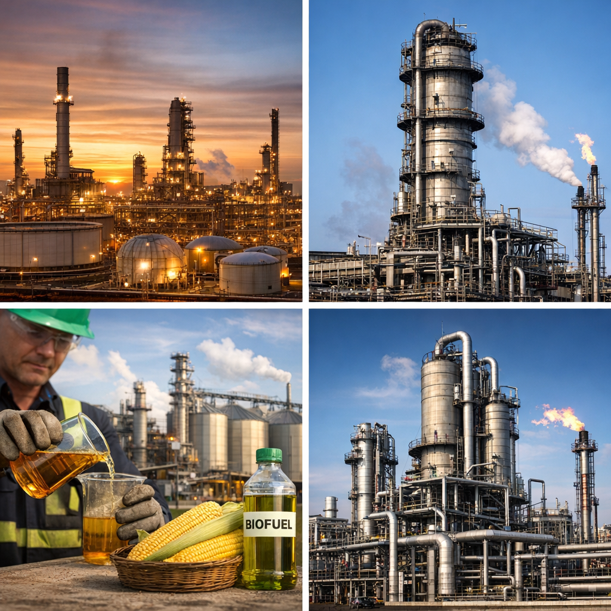

How Fuel Is Made
1. Crude Oil → Fuel (Petroleum-Based) Most fuels are produced from crude oil, a mixture of hydrocarbons extracted from underground. The process mainly happens in refineries. Step 1: Distillation Crude oil is heated in a large furnace and sent into a distillation tower. Components separate by boiling point: propane and butane rise to the top, gasoline stays in the middle, and diesel and heavier oils stay lower. Step 2: Conversion Some fractions are chemically converted to produce more gasoline or diesel. This includes cracking and reforming processes. Step 3: Treatment & Blending Impurities like sulfur are removed. Additives are added to improve engine performance and prevent corrosion. 2. Biofuels Biofuels are made from plants, waste materials, or algae. Examples include ethanol and biodiesel. 3. Synthetic Fuels Synthetic fuels are produced from natural gas, coal, or biomass using the Fischer–Tropsch process. Key Points: Refineries are large chemical factories. Fuel quality is controlled by strict standards. Blending biofuels reduces pollution and oil dependency.